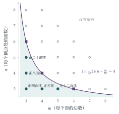

STEP III 1999，第 4 题
继续之前，请先阅读题目（原题为英文）。题目载于 STEP Support Programme 的题目资料库： step.maths.org/questions/99-s3-q4
引子
正多边形（regular polygon）有无穷多种：三角形、正方形、五边形，如此类推，任何边数都有。你或会以为正多面体（regular polyhedron）也有无穷多种。其实恰好只有五种：正四面体（tetrahedron）、正方体（cube）、正八面体（octahedron）、正十二面体（dodecahedron）和正二十面体（icosahedron）。柏拉图（Plato）把其中四种与四大元素（火、土、气、水）对应，第五种则对应宇宙；欧几里得（Euclid）的《几何原本》（Elements）是有史以来影响最深远的数学著作，全书最后就是证明再没有其他正多面体；开普勒（Kepler）更用它们建构了一个太阳系模型。
本题只用寥寥数行就证明了这个分类，所依据的只是欧拉（Euler）在 1750 年发现的一条非凡公式：对任何凸多面体（convex polyhedron），\(V - E + F = 2\)。一条关于计数的公式，化成了一个关于形状的定理，而 \(2\) 这个数原来正是球面的“指纹”。
动笔之前
用正方体验证欧拉公式：它有多少个顶点（vertex）、多少条棱（edge）、多少个面（face）？以正方形为底的棱锥体（pyramid）又如何？
正方体有 \(V = 8\)，\(E = 12\)，\(F = 6\)，而 \(8 - 12 + 6 = 2\)。以正方形为底的棱锥体有 \(5\) 个顶点、\(8\) 条棱和 \(5\) 个面，而 \(5 - 8 + 5 = 2\)。任何没有洞的多面体，不论多么不规则，这条公式都成立。
在正多面体中，每个面有 \(m\) 条棱，而每条棱是两个面的公共边。由此可得 \(E\) 与 \(F\) 之间的甚么方程？同样地，\(E\) 与 \(V\) 之间又有甚么方程？
用两种方法计数棱与面的关联：\(F\) 个面各有 \(m\) 条棱，而每条棱被数了两次（它所属的两个面各数一次），所以 \(mF = 2E\)。同样地，每个顶点连着 \(n\) 条棱，而每条棱有两个端点，所以 \(nV = 2E\)。这种“用两种方法计数同一样东西”的技巧称为双重计数（double counting）。
逐步解题
阶段 1 \(F\) 的公式
由 \(mF = 2E\) 和 \(nV = 2E\)，可得 \(E = \frac{mF}{2}\) 和 \(V = \frac{mF}{n}\)。代入欧拉公式， \[\frac{mF}{n} - \frac{mF}{2} + F = 2 \quad\Longrightarrow\quad F\,\frac{2m - mn + 2n}{2n} = 2 \quad\Longrightarrow\quad F = \frac{4n}{2m + 2n - mn}.\] 而 \(4 - (n - 2)(m - 2) = 4 - (mn - 2m - 2n + 4) = 2m + 2n - mn = h\)。所以 \(F = \frac{4n}{h}\)。■
阶段 2 \(m\) 和 \(n\) 可以取哪些值？
\(m\)（每个面的边数）和 \(n\)（每个顶点处的面数）最小可以是多少？又既然 \(F > 0\)，\(h\) 必须是正还是负？
多边形最少要有 \(3\) 条边，所以 \(m \geq 3\)；立体的每个顶点处最少要有 \(3\) 个面相交，所以 \(n \geq 3\)。由于 \(F > 0\)，我们需要 \(h > 0\)，即 \((n - 2)(m - 2) < 4\)。两个因子都至少是 \(1\)，所以 \((m - 2, n - 2)\) 只可能是 \((1, 1)\)、\((1, 2)\)、\((2, 1)\)、\((1, 3)\) 和 \((3, 1)\)。
就这五种可能逐一计算 \(h\)，然后求 \(F\)，再求 \(E = \frac{mF}{2}\) 和 \(V = \frac{mF}{n}\)。指出每种情况是哪一个立体。
| \(m\) | \(n\) | \(h\) | \(F\) | \(E\) | \(V\) | 立体 |
|---|---|---|---|---|---|---|
| \(3\) | \(3\) | \(3\) | \(4\) | \(6\) | \(4\) | 正四面体 |
| \(3\) | \(4\) | \(2\) | \(8\) | \(12\) | \(6\) | 正八面体 |
| \(4\) | \(3\) | \(2\) | \(6\) | \(12\) | \(8\) | 正方体 |
| \(3\) | \(5\) | \(1\) | \(20\) | \(30\) | \(12\) | 正二十面体 |
| \(5\) | \(3\) | \(1\) | \(12\) | \(30\) | \(20\) | 正十二面体 |
可能的情况只有这些，所以正多面体最多只有五种；而这五种全部存在（欧几里得说明了如何逐一构作）。■
回顾
双重计数。用两种方法计数棱与面、棱与顶点的关联，得出 \(mF = 2E\) 和 \(nV = 2E\)。
由正值得出不等式。\(F > 0\) 这个简单的要求，把无穷多个候选者筛剩五个。
存在性要另行处理。这个论证只说明最多有五种；每一种是否真的存在，还须实际构作出来才能确定。
背后的数学
欧拉在 1750 年提出 \(V - E + F = 2\)，但他的证明有漏洞；这条公式其后经历了一段引人入胜的历史，当中有一次又一次的尝试证明、反例（counterexample）和修补。一个“画框”形的多面体，中间穿了一个正方形的洞，有 \(V - E + F = 0\)；由两个正方体在一个顶点处相连而成的多面体，则有 \(V - E + F = 3\)。拉卡托斯（Imre Lakatos）把这段历史写成一本名著 Proofs and Refutations（《证明与反驳》），探讨数学概念如何在反例的磨砺下变得精确。最终的答案是：\(V - E + F\) 只取决于曲面在拓扑学（topology）那种宽松意义下的形状：凡是可以变形成球面的曲面，它等于 \(2\)；环面（torus，即冬甩形）是 \(0\)；有 \(g\) 个洞的曲面则是 \(2 - 2g\)。这个数称为欧拉示性数（Euler characteristic），是拓扑学最早的概念之一；拓扑学研究的，就是经拉伸和弯曲后仍然不变的性质。

球面以外
当 \(h = 0\) 或 \(h < 0\) 时又会怎样？当 \((m - 2)(n - 2) = 4\) 时，有三组解：\((3, 6)\)、\((4, 4)\) 和 \((6, 3)\)，即六个三角形、四个正方形或三个六边形在一点相接，各角之和恰好是 \(360^\circ\)。这就是平面的三种正则密铺（regular tiling），也就是浴室地砖和蜂巢的图案。而当 \((m - 2)(n - 2) > 4\) 时，一个顶点处各角之和大于 \(360^\circ\)，这在平面上不可能出现，但在 第 5.8 节 的双曲平面（hyperbolic plane）上却完全可行。双曲平面有无穷多种正则密铺，图 7.9.1 中曲线上方的每一点各对应一种；艾雪（Escher）的木刻版画 Circle Limit（《圆极限》）系列，画的就是其中几种。所以，柏拉图立体的分类其实是一个三分法（trichotomy）的第一种情况，这个三分法（球面、平面、双曲平面）贯穿整个几何学。
对称群
柏拉图立体的对称构成群（group）：正四面体有 \(12\) 个旋转，正方体和正八面体有 \(24\) 个（两者互为对偶（dual）：把面与顶点互换，\(m \leftrightarrow n\)），正十二面体和正二十面体则有 \(60\) 个。这个阶（order）为 \(60\) 的正二十面体群是一个“单”群（simple group）；正如我们在 第 6.4 节 提过，正是它令五次方程（quintic）不能用根式（radicals）求解。克莱因（Felix Klein）写了一整本书 Lectures on the Icosahedron（《正二十面体讲义》，1884），把正二十面体与五次方程的解法联系起来。
思维技巧
用两种不同的方法计数同一组东西，然后令两个结果相等。
这里所计数的，是所有（棱，面）配对所成的集合，其中棱在该面上。双重计数是组合数学（combinatorics）中最强大的工具之一，在第 9 章会一再出现。
延伸练习
对偶性。证明把 \(m\) 和 \(n\) 互换，会令 \(V\) 和 \(F\) 互换，而 \(E\) 保持不变。哪几对柏拉图立体互为对偶？哪一个是自对偶的？
足球。传统的足球由 \(12\) 个五边形和 \(20\) 个六边形组成，每个顶点处有三个面相接。利用双重计数和欧拉公式，验证 \(V - E + F = 2\)。再证明更一般的结果：任何这样由五边形和六边形组成、每个顶点处有三个面相接的多面体，都恰好有 \(12\) 个五边形。
环面。造一个“画框”形的多面体（一个正方形方块，中间有一个正方形的洞），数出 \(V\)、\(E\) 和 \(F\)。验证 \(V - E + F = 0\)。
顶点处的角。正 \(m\) 边形的内角（interior angle）是 \(180^\circ(1 - \frac2m)\)。证明 \(n\) 个这样的角能围着凸立体的一个顶点拼合（总和小于 \(360^\circ\)），当且仅当 \((m - 2)(n - 2) < 4\)，从而得出这个分类的第二个证明。
延伸阅读
David Richeson, Euler’s Gem（Princeton University Press）。讲述 \(V - E + F = 2\) 的历史，以及它如何引出拓扑学。非常适合高中第六学级（sixth form）的学生阅读。
Imre Lakatos, Proofs and Refutations（Cambridge University Press）。一场关于欧拉公式和证明本质的对话。
H. S. M. Coxeter, Regular Polytopes（Dover）。论述正多面体及其高维同类的经典著作。